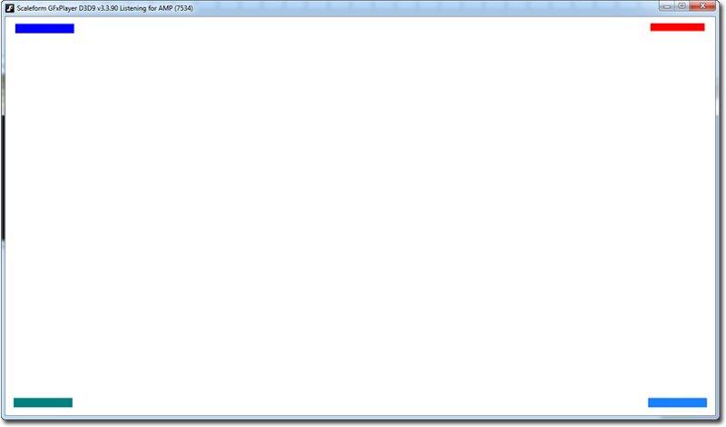

UDN
Search public documentation:
GFxPositioningGuide
日本語訳
中国翻译
한국어
Interested in the Unreal Engine?
Visit the Unreal Technology site.
Looking for jobs and company info?
Check out the Epic games site.
Questions about support via UDN?
Contact the UDN Staff
中国翻译
한국어
Interested in the Unreal Engine?
Visit the Unreal Technology site.
Looking for jobs and company info?
Check out the Epic games site.
Questions about support via UDN?
Contact the UDN Staff
UE3 Home > User Interfaces & HUDs > Scaleform GFx > SetViewScaleMode, SetAlignment and SetViewport Guide
SetViewScaleMode, SetAlignment and SetViewport Guide
Overview
This brief tutorial explains the three GFxMoviePlayer functions SetViewScaleMode(), SetAlignment() and SetViewport() so that you have an easier time figuring out how and when to use them. First off, these three functions should be called on a GFx Movie after that movie has started using Start() and Advance(). Typically, this is how you would use them:
function CreateMovie()
{
MyMovie = new MenuClass;
// The init function of MenuClass contains Sart() and Advance()
MyMovie.Init(class'Engine'.static.GetEngine().GamePlayers[MyMovie.LocalPlayerOwnerIndex]);
MyMovie.SetViewScaleMode(SM_NoScale);
MyMovie.SetAlignment(Align_TopCenter);
}
SetViewScaleMode Parameters
SetViewScaleMode allows you to specify how the GFx Movie should be scaled/fit to the screen as resolution changes occur. Scale Mode can be set from either ActionScript or UnrealScript.
MyMovie.SetViewScaleMode(SM_NoScale);
- SM_NoScale - The SWF remains the same size and aspect ratio (AR) as its original created document dimensions as set in the Flash IDE, regardless of any resolution changes in UDK; scaling will not occur but clipping will occur at game resolutions smaller than the Flash document size.
- SM_ShowAll - The entire SWF is always visible, no matter what resolution you set in UDK; uniform scaling is performed on the SWF to ensure this, keeping the original AR; clipping will not occur, but letter boxing will.
- SM_ExactFit - The SWF is stretched, or non-uniform scaled, to fit the screen resolution, altering its AR; this causes movie clip distortion on either the X or Y; clipping will not occur.
- SM_NoBorder - The SWF is always displayed at the original AR, but it is scaled depending on the resolution; clipping will occur at game resolutions smaller than the Flash document size.
Stage.scaleMode = "noScale";
- noScale - Same as SM_NoScale.
- showAll - Same as SM_ShowAll.
- exactFit - Same as SM_ExactFit.
- noBorder - Same as SM_NoBorder.
SetAlignment Parameters
SetAlignment allows you to specify how the GFx Movie is aligned on the screen. SetAlignment can be set from either ActionScript or UnrealScript.
MyMovie.SetAlignment(Align_TopCenter);
- Align_Center - SWF is centered horizontally and vertically on screen.
- Align_TopCenter - Top of SWF is at top of screen, and SWF is centered horizontally on screen.
- Align_BottomCenter - Bottom of SWF is at bottom of screen, and SWF is centered horizontally on screen.
- Align_CenterLeft - SWF is centered vertically and aligned to the left side of the screen.
- Align_CenterRight - SWF is centered vertically and aligned to the right side of the screen.
- Align_TopLeft - Top left corner of SWF is at top left corner of the screen.
- Align_TopRight - Top right corner of SWF is at top right corner of the screen.
- Align_BottomLeft - Bottom left corner of SWF is at bottom left corner of the screen.
- Align_BottomRight - Bottom right corner of SWF is at bottom right corner of the screen.
Stage.align = "TL";
- C - Same as Align_Center.
- TC - Same as Align_TopCenter.
- BC - Same as Align_BottomCenter.
- CL - Same as Align_CenterLeft.
- CR - Same as Align_CenterRight.
- TL - Same as Align_TopLeft.
- TR - Same as Align_TopRight.
- BL - Same as Align_BottomLeft.
- BR - Same as Align_BottomRight.
SetViewport
SetViewport allows you to manually alter the display size and location of the GFx Movie viewport. Example: MyMovie.SetViewport(0, 0, 1280, 720) displays the movie at 1280x720 size, with the top left of the movie starting at screen coordinate 0,0.
An Example Use Case
- In Flash, create a new 1280x720 document.
- Create four small rectangles of different colors and place each rectangle in a corner of the Flash file, about 15 pixels away from each edge.
- Convert all four rectangles to movie clips. IMPORTANT: All rectangles' registration points should be at the top left corner of the rectangle. Be sure to set the registration points appropriately when you convert each rectangle to a symbol using the registration point icon in the convert to symbol window.
- Give each rectangle an instance name, starting from the top left and going around clockwise, name them: rectangle1, rectangle2, rectangle3, rectangle4. You should have something like this now:
 - Create a new actions layer.
- On that layer, enter this code:
_global.gfxExtensions = true;
Stage.scaleMode = "noScale";
Stage.align = "TL";
var srl:Object = new Object();
function updateHud():Void
{
// position the rectangles 15 pixels from the edges
// top left
rectangle1._y = 15;
rectangle1._x = 15;
// top right
rectangle2._y = 15;
rectangle2._x = (Stage["visibleRect"].width - 15) - rectangle2.width;
// bottom right
rectangle3._y = (Stage["visibleRect"].height - 15) - rectangle3.height;
rectangle3._x = (Stage["visibleRect"].width - 15) - rectangle3.width;
// bottom left
rectangle4._y = (Stage["visibleRect"].height - 15) - rectangle4.height;
rectangle4._x = 15;
}
// Tells the stage to listen for changes.
Stage.addListener(srl);
// Stage resize handler - runs any time the movie is resized via resolution change.
srl.onResize = function()
{
updateHud();
}
// Call updateHud on initialization
updateHud();
stop();
- Save and Publish the SWF, and import into UDK.
- Either use Kismet (Open GFx Movie) or create an UnrealScript class that displays this SWF on the screen as the HUD.
- Run the game at 1280x720 resolution. You should see the HUD you just created.
- Open the console with the Tab key, and change the resolution to something else, say 800x600 using "setres 800x600".
- Take note that the four rectangles will be in the exact same position (the corners) of the HUD, but still be the same size (not scaled).
Stage.scaleMode = "noScale"; Stage.align = "TL";
MyMovie.SetViewScaleMode(SM_NoScale); MyMovie.SetAlignment(Align_TopLeft);